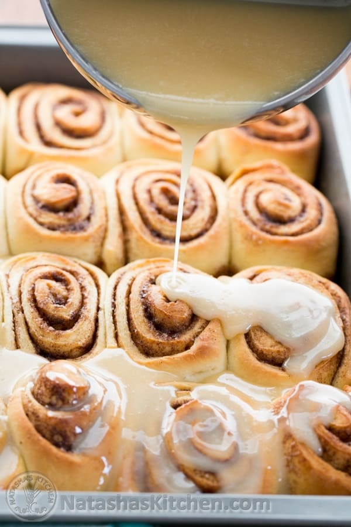

Return to Home Page
Cinnamon Roll with Maple Glaze

Description
This recipe creates 12 beautiful and sweet cinnamon rolls. Make sure to bake them and enjoy with a warm cup of coffee!
Ingredients
Ingredients for Cinnamon Rolls:
- 1 cups warm milk, not hot
- 1/2 Tbsp active dry yeast
- 4 Tbsp sugar, (divided)
- 3 cups + 2-4 Tbsp all-purpose flour, (divided into 1/2 cup and 2 1/2 cups)
- 1 large egg
- 2 Tbsp melted unsalted butter, divided (1 Tbsp for batter, 1 Tbsp to brush tops)
- 1/2 tsp salt
Filling Ingredients:
- 6 Tbsp unsalted butter, softened + 1 Tbsp for pan
- 1/4 cup granulated sugar
- 1 Tbsp ground cinnamon
Glaze Ingredients:
- 2 cups powdered sugar
- 4 Tbsp unsalted butter melted
- 2 Tbsp real maple syrup
- 1/8 tsp salt
- 2-4 Tbsp milk, or to desired consistency
Steps
- In the bowl of an electric mixer, add 1 cup warm milk and sprinkle the top with 1/2 Tbsp yeast. Let sit for 5-7 five minutes at room temp. Add 1/2 cup flour and 2 Tbsp sugar. Whisk together until blended, cover with plastic wrap and let it rise at room temperature for 35-45 minutes. It will proof faster in a warm place (25 minutes in a 100˚ oven, but don’t let it get hotter than that or it will start to cook and ruin the yeast).
-
Whisk in the 1 egg, remaining 2 Tbsp sugar, 1 Tbsp melted butter and 1/2 tsp salt.
-
Now using the dough hook, add the remaining 2 1/2 cups of flour (1/2 cup at a time) letting it blend into the dough before each addition. You may need to add an extra 2-4 Tbsp of flour depending on your flour. You know you’ve added enough flour when the dough is no longer sticking to your hands and barely sticking to the walls of the bowl. ** See tip on measuring flour at the bottom. Once all of the flour is in, knead on low speed with the dough hook for 10 minutes.
-
Cover with plastic wrap and let rise in a warm 100˚ oven for 1 hour (2 hours in a warm room). The dough will nearly double in volume. Be patient. It’s all worth it in the end.
-
Generously flour a large non-stick work surface and the top of your dough and roll dough into a 17"x10" rectangle. Use a spatula to spread your 6 Tbsp softened butter over the top. Sprinkle the top evenly with cinnamon/sugar mixture. Roll the dough up starting with one of the longer sides, keeping a tight roll.
-
Cut the cinnamon roll into 16 equal pieces. Butter the sides and bottom of your 9x13 baking pan and add cinnamon rolls slightly spaced, cut-side down. Cover with plastic wrap and let the cinnamon rolls rise in a warm 100˚ oven for 30 minutes or until they look puffy (or 50 minutes in a warm room). Be patient. You'll be eating them before you know it!
-
Once cinnamon rolls have risen, brush tops with 1 Tbsp melted butter and bake at 360˚F for 20 mins or until tops are light golden brown.
Making the Glaze:
-
Ten minutes before the cinnamon rolls come out of the oven, melt 4 Tbsp butter in a small saucepan and whisk in 2 cups powdered sugar, 2 Tbsp maple syrup and 1/8 tsp salt. Finally whisk in about 2 -4 Tbsp milk to desired consistency and stir until smooth.
-
Pour over cinnamon rolls while they are still hot out of the oven.
Recipe Notes
- **Cooking tip**
- To measure the flour accurately, fluff it up then scoop it into a dry measuring cup. Scrape off the top with the back of a knife.
Return to the Top of the Page